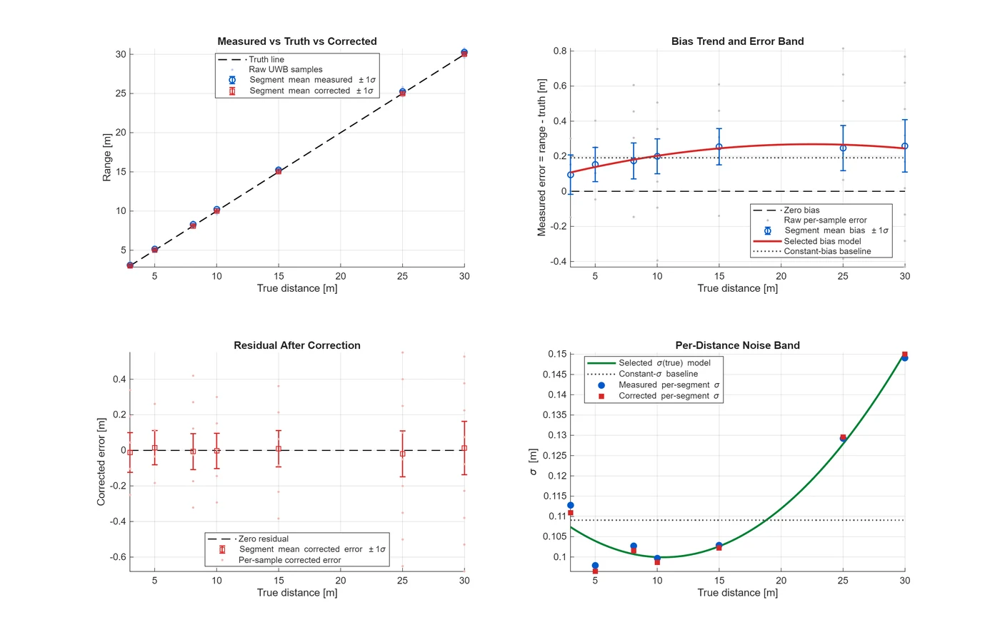
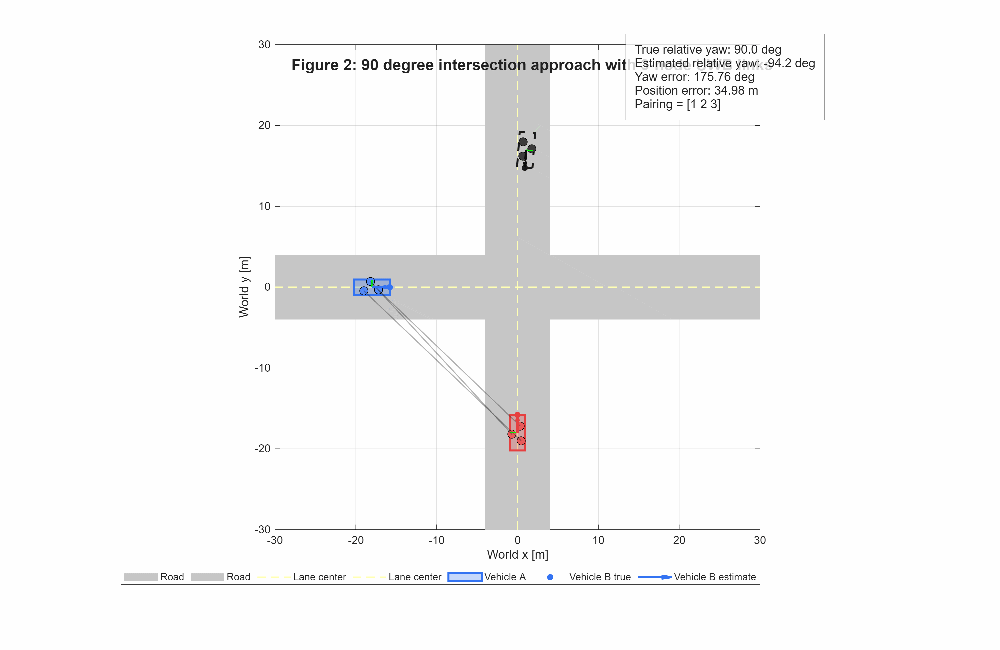
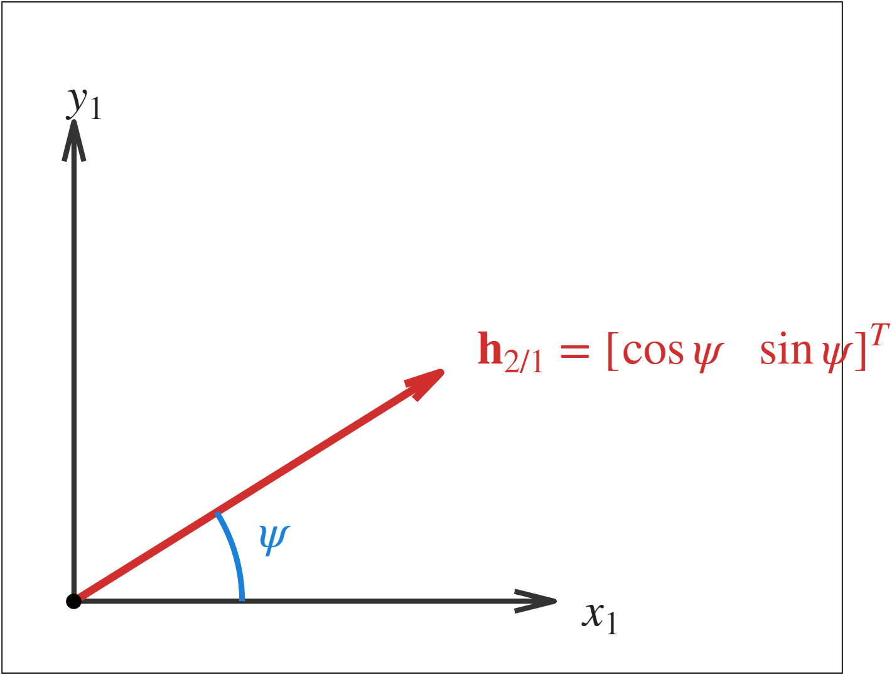

Problem
GNSS can be jammed, spoofed, or blocked. My project asks whether commercial UWB modules can give vehicles a useful way to range off each other, so they can still localize together when GNSS is degraded or untrusted.
My Contribution
- Built DWM1001 BLE/serial data-logging pipelines and MATLAB parsing/analysis tooling for ranging streams, including 3-link (A1–B1 / A2–B2 / A3–B3) vehicle datasets and GPS/UWB comparison plots.
- Calibrated SS-TWR ranging against surveyed distances on a multi-thousand-sample outdoor campaign.
- Implemented a 3-link relative-pose estimator (candidate roots + WLS/MAP prior) reinforced by GPS data.
- Rewrote module firmware for a lower bit rate and longer preamble to extend usable range.
- Quantified bias, dropouts, and outliers across geometries and LOS/NLOS conditions to feed an estimator-ready error model.

Measured Results
On the poster we presented, a piecewise calibration correction reduced cross-validation MAE from 0.110 m to 0.058 m, and the rewritten scheduled-ranging firmware extended practical operation from about 30 m to 100 m (110 m in the longest tests). The follow-on calibration campaign put harder numbers on it: 7,553 outdoor samples across 1.65–30.39 m, with leave-one-distance-out RMSE dropping from 8.9 cm to 3.7 cm after correction.
On top of the calibrated ranging, the 3-link relative-pose estimator (candidate roots with a WLS/MAP prior, reinforced by GPS) resolved all 81 GPS-aligned vehicle frames with 5.99 cm mean UWB fit RMSE.


Presentation
I presented this research at the Dennis Dean Undergraduate Research Conference at Virginia Tech. The underlying poster, with Joey Cahill, is Resilient Collaborative Navigation Using Intervehicle Ultra-Wideband Ranging in GNSS-Degraded Environments.
Next Validation Step
The next step is fusion: combine calibrated UWB ranging with inertial and vehicle-motion models in an EKF or particle filter for cooperative localization, and characterize accuracy against anchor layout and vehicle dynamics.